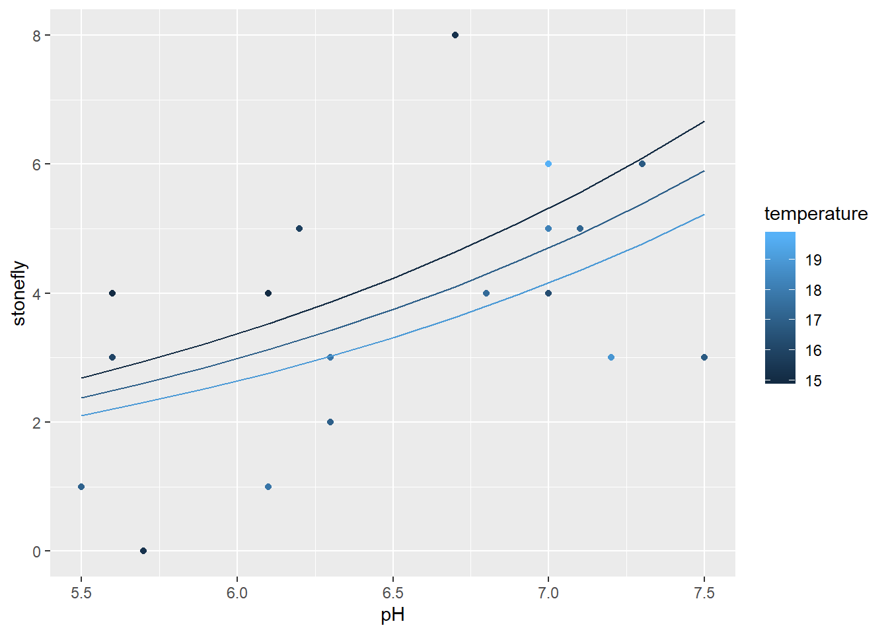
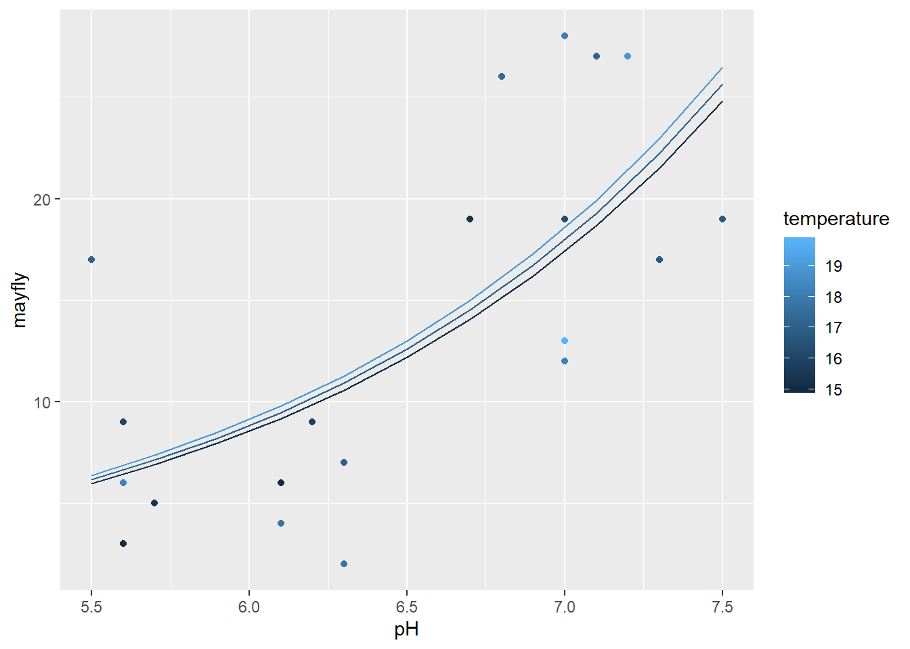
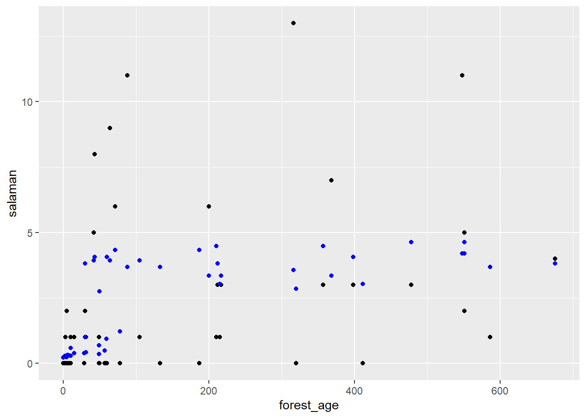
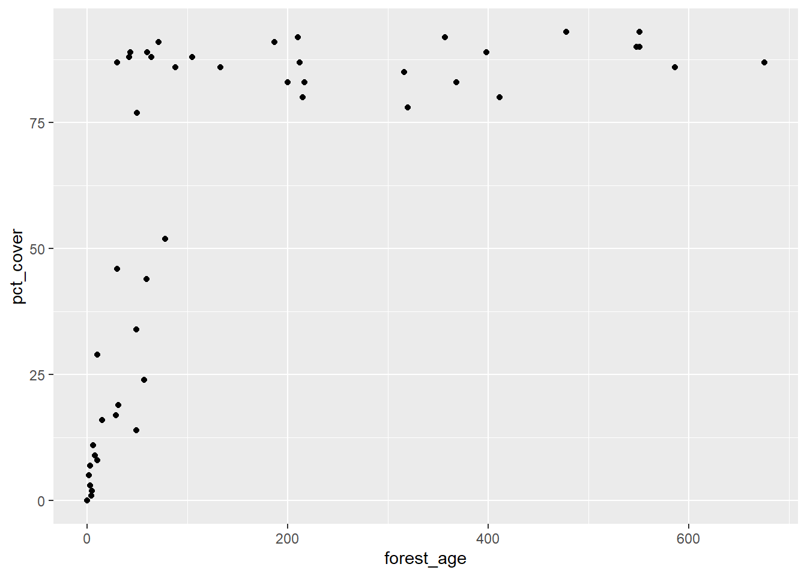

Régression de Poisson
11 novembre 2020
1. Communautés d’insectes de cours d’eau
Le tableau de données stream_composition.csv indique le nombre d’espèces de cinq ordres d’insectes présentes dans 20 cours d’eau, en fonction de la température et du pH.
stream <- read.csv("stream_composition.csv")
str(stream)## 'data.frame': 20 obs. of 8 variables:
## $ stream : int 1 2 3 4 5 6 7 8 9 10 ...
## $ pH : num 6.8 5.5 6.3 7.3 7.2 7 7 6.1 6.2 7.5 ...
## $ temperature: num 17.4 17.1 17 16.8 18.9 18.1 16.3 15 15.8 16.8 ...
## $ mayfly : int 26 17 7 17 27 28 19 6 9 19 ...
## $ stonefly : int 4 1 2 6 3 6 4 4 5 3 ...
## $ caddisfly : int 9 23 25 9 16 19 21 21 37 12 ...
## $ diptera : int 30 16 10 25 25 30 19 30 26 12 ...
## $ beetle : int 3 17 1 1 2 21 13 12 5 3 ...- Estimez l’effet de la température et du pH sur le nombre d’espèces de plécoptères (
stonefly), avec une régression de Poisson suivant la formulestonefly ~ temperature + pH. Vérifiez si les données sont surdispersées et corrigez vos estimés s’il y a lieu.
Réponse
La valeur du \(\chi^2\) ne diverge pas significativement du modèle de Poisson, donc les données ne sont pas surdispersées.
mod_plec <- glm(stonefly ~ temperature + pH, data = stream, family = poisson)
chi2 <- sum((stream$stonefly - fitted(mod_plec))^2 / fitted(mod_plec))
1 - pchisq(chi2, mod_plec$df.residual)## [1] 0.6199234Le pH a un effet positif et significatif.
summary(mod_plec)##
## Call:
## glm(formula = stonefly ~ temperature + pH, family = poisson,
## data = stream)
##
## Deviance Residuals:
## Min 1Q Median 3Q Max
## -2.4042 -0.8017 0.1375 0.6798 1.4567
##
## Coefficients:
## Estimate Std. Error z value Pr(>|z|)
## (Intercept) -0.59407 1.67963 -0.354 0.7236
## temperature -0.06127 0.09709 -0.631 0.5280
## pH 0.45488 0.20123 2.260 0.0238 *
## ---
## Signif. codes: 0 '***' 0.001 '**' 0.01 '*' 0.05 '.' 0.1 ' ' 1
##
## (Dispersion parameter for poisson family taken to be 1)
##
## Null deviance: 23.045 on 19 degrees of freedom
## Residual deviance: 17.705 on 17 degrees of freedom
## AIC: 83.967
##
## Number of Fisher Scoring iterations: 5- Quelle portion de la variance du nombre d’espèces est expliquée par le modèle?
Réponse: Environ 23% selon le pseudo-\(R^2\).
1 - mod_plec$deviance / mod_plec$null.deviance## [1] 0.2317227- Si l’une des deux variables a un effet significatif, interprétez la valeur du coefficient.
Réponse
Lorsque le pH augmente d’une unité, le nombre moyen d’espèces de plécoptères augmente de 57%.
exp(0.45)## [1] 1.568312- Affichez le nombre d’espèces observées et les courbes de prédiction du modèle pour des valeurs du pH allant de 5.5 à 7.5 et pour trois valeurs de la température: 15, 17 et 19 degrés C.
Truc: Avec ggplot, pour que les courbes de prédiction relient les points ayant la même valeur d’une variable numérique (ex.: température), vous devez définir un groupe (ex.: group = temperature) dans la fonction aes. Vous pouvez aussi convertir la température en facteur.
Réponse
stream_nouv <- expand.grid(pH = seq(5.5, 7.5, 0.2), temperature = c(15, 17, 19))
stream_nouv$pred <- predict(mod_plec, newdata = stream_nouv, type = "response")
library(ggplot2)
ggplot(stream, aes(x = pH, y = stonefly, color = temperature, group = temperature)) +
geom_point() +
geom_line(data = stream_nouv, aes(y = pred))
- Répétez les étapes (a)-(d) pour un modèle du nombre d’espèces d’éphémères (
mayfly).
Réponse
La valeur du \(\chi^2\) indique une surdispersion significative.
mod_may <- glm(mayfly ~ temperature + pH, data = stream, family = poisson)
chi2 <- sum((stream$mayfly - fitted(mod_may))^2 / fitted(mod_may))
1 - pchisq(chi2, mod_may$df.residual)## [1] 8.311314e-07c_hat <- chi2/mod_may$df.residual
c_hat## [1] 3.565674Puisque le paramètre de dispersion est inférieur à 4, nous pouvons tout de même utiliser le modèle en corrigeant les erreurs-types.
summary(mod_may, dispersion = c_hat)##
## Call:
## glm(formula = mayfly ~ temperature + pH, family = poisson, data = stream)
##
## Deviance Residuals:
## Min 1Q Median 3Q Max
## -3.3591 -1.3744 -0.5432 1.1866 3.5673
##
## Coefficients:
## Estimate Std. Error z value Pr(>|z|)
## (Intercept) -2.36699 1.77332 -1.335 0.181950
## temperature 0.01623 0.09601 0.169 0.865742
## pH 0.71137 0.21074 3.376 0.000737 ***
## ---
## Signif. codes: 0 '***' 0.001 '**' 0.01 '*' 0.05 '.' 0.1 ' ' 1
##
## (Dispersion parameter for poisson family taken to be 3.565674)
##
## Null deviance: 110.95 on 19 degrees of freedom
## Residual deviance: 58.36 on 17 degrees of freedom
## AIC: 148.99
##
## Number of Fisher Scoring iterations: 5L’effet du pH est significatif. Une augmentation d’une unité de pH correspond à un doublement du nombre moyen d’espèces (\(e^{0.71} = 2.0\)).
Le pseudo-\(R^2\) pour ce modèle est égal à \(1 - 58.4 / 111 = 0.47\).
Voici les courbes de prédiction pour ce modèle:
stream_nouv$pred_may <- predict(mod_may, newdata = stream_nouv, type = "response")
ggplot(stream, aes(x = pH, y = mayfly, color = temperature, group = temperature)) +
geom_point() +
geom_line(data = stream_nouv, aes(y = pred_may))
- Quel est le nombre moyen d’espèces d’éphémères prédit par le modèle en (e) pour un cours d’eau avec une température de 17 degrés et un pH de 8.5? Cette prédiction est-elle fiable?
Réponse
predict(mod_may, data.frame(pH = 8.5, temperature = 17), type = "response")## 1
## 52.22809Les conditions de la prédiction se situent hors de la plage de pH observée dans les données (5.5 à 7.5) et la prédiction elle-même se situe au-delà de toutes les valeurs observées pour mayfly (maximum de 28 dans les données). Du point de vue biologique, les organismes ont une certaine zone de tolérance au pH, donc nous ne nous attendons pas à ce que le doublement du nombre d’espèces pour chaque augmentation d’une unité de pH continue à l’extérieur des valeurs observées.
2. Salamandres dans différents paysages forestiers
 Photo: Bill Bouton
Photo: Bill Bouton
Le fichier salamander.csv contient des données de Welsh et Lind (1995) sur le nombre de salamandres (salaman) de l’espèce Plethodon elongatus dans 47 placettes (site), en fonction du pourcentage de couvert forestier (pct_cover) et de l’âge du peuplement (forest_age).
sal <- read.csv("salamander.csv")
str(sal)## 'data.frame': 47 obs. of 4 variables:
## $ site : int 1 2 3 4 5 6 7 8 9 10 ...
## $ salaman : int 13 11 11 9 8 7 6 6 5 5 ...
## $ pct_cover : int 85 86 90 88 89 83 83 91 88 90 ...
## $ forest_age: int 316 88 548 64 43 368 200 71 42 551 ...- À partir d’une régression de Poisson, estimez l’effet du couvert forestier (
pct_cover) sur le nombre de salamandres par placette.
Réponse
Après avoir ajusté le modèle, nous vérifions la dispersion des résidus.
mod_sal <- glm(salaman ~ pct_cover, data = sal, family = poisson)
chi2 <- sum((sal$salaman - fitted(mod_sal))^2 / fitted(mod_sal))
1 - pchisq(chi2, mod_sal$df.residual)## [1] 3.766256e-09Les données sont surdispersées, donc il faut ajuster l’erreur-type des coefficients.
disp <- chi2 / mod_sal$df.residual
summary(mod_sal, dispersion = disp)##
## Call:
## glm(formula = salaman ~ pct_cover, family = poisson, data = sal)
##
## Deviance Residuals:
## Min 1Q Median 3Q Max
## -2.9453 -1.3680 -0.7077 0.6344 3.8388
##
## Coefficients:
## Estimate Std. Error z value Pr(>|z|)
## (Intercept) -1.481957 0.753106 -1.968 0.049092 *
## pct_cover 0.032409 0.008908 3.638 0.000275 ***
## ---
## Signif. codes: 0 '***' 0.001 '**' 0.01 '*' 0.05 '.' 0.1 ' ' 1
##
## (Dispersion parameter for poisson family taken to be 2.730242)
##
## Null deviance: 190.22 on 46 degrees of freedom
## Residual deviance: 121.31 on 45 degrees of freedom
## AIC: 210.36
##
## Number of Fisher Scoring iterations: 5D’après ces résultats, chaque augmentation de 1% de couvert forestier augmente le nombre moyen de salamandres d’environ 3% (\(e^{0.032} = 1.032\)).
- Est-ce que l’ajout du prédicteur
forest_ageaméliore le pouvoir prédictif de ce modèle?
Réponse
Nouveau modèle avec les deux prédicteurs:
mod_sal2 <- glm(salaman ~ pct_cover + forest_age, data = sal, family = poisson)
summary(mod_sal2)##
## Call:
## glm(formula = salaman ~ pct_cover + forest_age, family = poisson,
## data = sal)
##
## Deviance Residuals:
## Min 1Q Median 3Q Max
## -2.9484 -1.3649 -0.7072 0.6243 3.8417
##
## Coefficients:
## Estimate Std. Error z value Pr(>|z|)
## (Intercept) -1.483e+00 4.573e-01 -3.244 0.00118 **
## pct_cover 3.249e-02 5.735e-03 5.666 1.46e-08 ***
## forest_age -2.111e-05 4.981e-04 -0.042 0.96620
## ---
## Signif. codes: 0 '***' 0.001 '**' 0.01 '*' 0.05 '.' 0.1 ' ' 1
##
## (Dispersion parameter for poisson family taken to be 1)
##
## Null deviance: 190.22 on 46 degrees of freedom
## Residual deviance: 121.30 on 44 degrees of freedom
## AIC: 212.36
##
## Number of Fisher Scoring iterations: 5L’effet de l’âge du peuplement est presque zéro et non significatif. Comparons les deux modèles avec le QAIC.
library(AICcmodavg)
disp <- c_hat(mod_sal2)
aictab(list(cover = mod_sal, cover_age = mod_sal2), c.hat = disp)##
## Model selection based on QAICc:
## (c-hat estimate = 2.792027)
##
## K QAICc Delta_QAICc QAICcWt Cum.Wt Quasi.LL
## cover 3 80.47 0.00 0.77 0.77 -36.96
## cover_age 4 82.86 2.39 0.23 1.00 -36.96Le modèle incluant seulement le couvert forestier est meilleur.
- Produisez un graphique du nombre de salamandres en fonction de l’âge du peuplement et superposez des points représentant les valeurs attendues (
fitted) du modèle basé uniquement sur le couvert forestier. Qu’observez-vous?
Réponse
Même si la variable forest_age n’est pas dans le modèle, le nombre de salamandres attendu est plus élevé dans les forêts anciennes.
# Valeurs observées en noir, attendues en bleu
ggplot(sal, aes(x = forest_age, y = salaman)) +
geom_point() +
geom_point(aes(y = fitted(mod_sal)), color = "blue") 
- D’après ces résultats, croyez-vous que l’âge du peuplement influence directement la population de salamandres? Est-ce qu’il influence indirectement cette population?
Réponse
D’après notre régression en (b), l’âge du peuplement n’a aucun effet une fois qu’on a pris en compte le pourcentage de couvert forestier. Cependant, les vieilles forêts ont un plus grand pourcentage de couvert forestier, comme on le voit dans le graphique ci-dessous. Si on suppose que l’âge explique en partie le pourcentage de couvert, cette variable a donc un effet indirect sur la population de salamandres.
ggplot(sal, aes(x = forest_age, y = pct_cover)) +
geom_point()